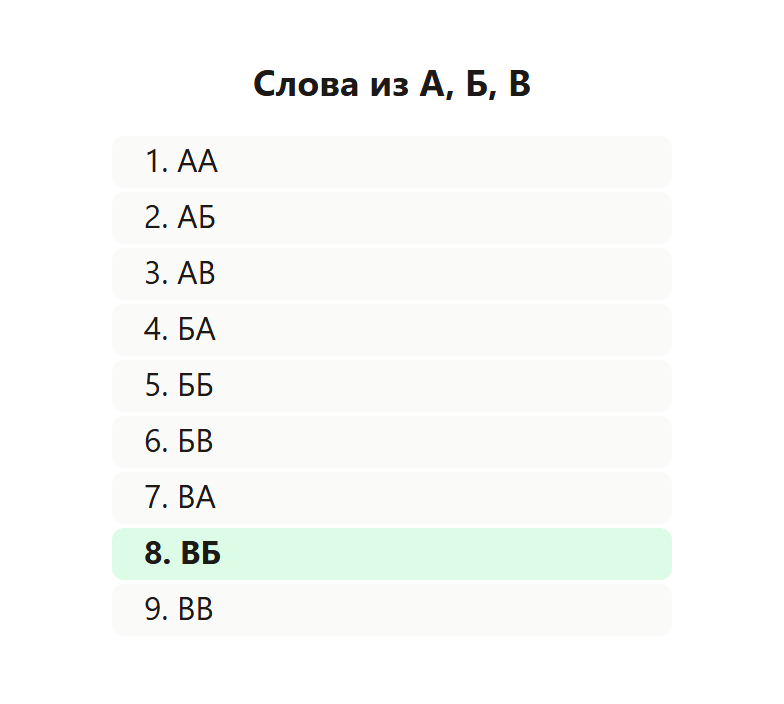
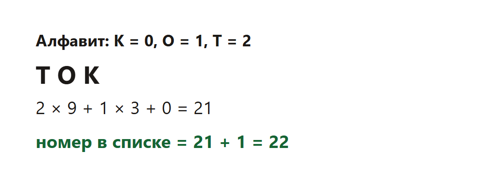

Буквы складывают в слова одной длины и выписывают в алфавитном порядке. Слова нумеруют с 1. Нужно найти номер слова или последнее слово с заданным свойством.
Слово здесь — любая цепочка букв, не обязательно из словаря.
Буквы ставят по алфавиту, даже если в условии они перечислены иначе. Для А, Б, В порядок уже алфавитный: А, потом Б, потом В.

Слов из двух букв: 3 × 3 = 9. Первая буква меняется медленнее всего.
Слово ВБ стоит под номером 8.
Буквы К, О, Т. Слова из трёх букв. В алфавите: К, О, Т. Им дают номера цифр: К = 0, О = 1, Т = 2.

Решение. ТОК — это цифры 2, 1, 0. Всего слов на каждую следующую букву в три раза меньше: 9, 3 и 1.
2 × 9 + 1 × 3 + 0 × 1 = 21. Это номер, если считать с нуля. В списке нумерация с 1, поэтому 21 + 1 = 22.
Ответ: 22.
Тот же алфавит К, О, Т и длина 3. Ищем последнее слово, где О встречается ровно один раз.
Идём с конца списка. Последнее слово — ТТТ, буквы О нет. Перед ним ТТО: одна О. Оно подходит, и дальше по списку подходящих уже нет.
Номер ТТО: Т=2, Т=2, О=1. 2 × 9 + 2 × 3 + 1 = 25, плюс 1, потому что список с единицы. Номер 26.
Буквы ставят по алфавиту и нумеруют с нуля. Слово читают как число в системе с основанием «сколько букв в алфавите». К результату прибавляют 1, потому что список на экзамене начинается с первого слова, а не с нулевого.
Если нужно последнее слово с условием, перебирают слова в том же алфавитном порядке и запоминают номер. Тысячи строк руками не пишут: цикл делает то же, что список на рисунке.
Каждый фрагмент запускается отдельно. В конце он печатает ответ. Комментарии на русском говорят, какая строка за что отвечает.
alphabet = "АБВ" # МЕНЯТЬ: буквы уже по алфавиту
word = "ВБ" # МЕНЯТЬ: какое слово ищем
digit = {letter: i for i, letter in enumerate(alphabet)}
base = len(alphabet)
number = 0
for letter in word:
number = number * base + digit[letter]
print(number + 1) # список нумеруют с 1, не с 0Что менять, если условие другое.
Программа печатает 8.
alphabet = "КОТ" # МЕНЯТЬ: К=0, О=1, Т=2
word = "ТОК" # МЕНЯТЬ
digit = {letter: i for i, letter in enumerate(alphabet)}
base = len(alphabet)
number = 0
for letter in word:
number = number * base + digit[letter]
print(number + 1)Что менять, если условие другое.
Программа печатает 22.
from itertools import product
alphabet = "КОТ" # МЕНЯТЬ
length = 3 # МЕНЯТЬ: длина слова
last_number = None
for index, letters in enumerate(product(alphabet, repeat=length), start=1):
word = "".join(letters)
if word.count("О") == 1: # МЕНЯТЬ: условие на слово
last_number = index
print(last_number)Что менять, если условие другое.
Программа печатает 26.
letters = 3 # МЕНЯТЬ: мощность алфавита
length = 3 # МЕНЯТЬ: длина слова
print(letters ** length)Что менять, если условие другое.
Программа печатает 27.